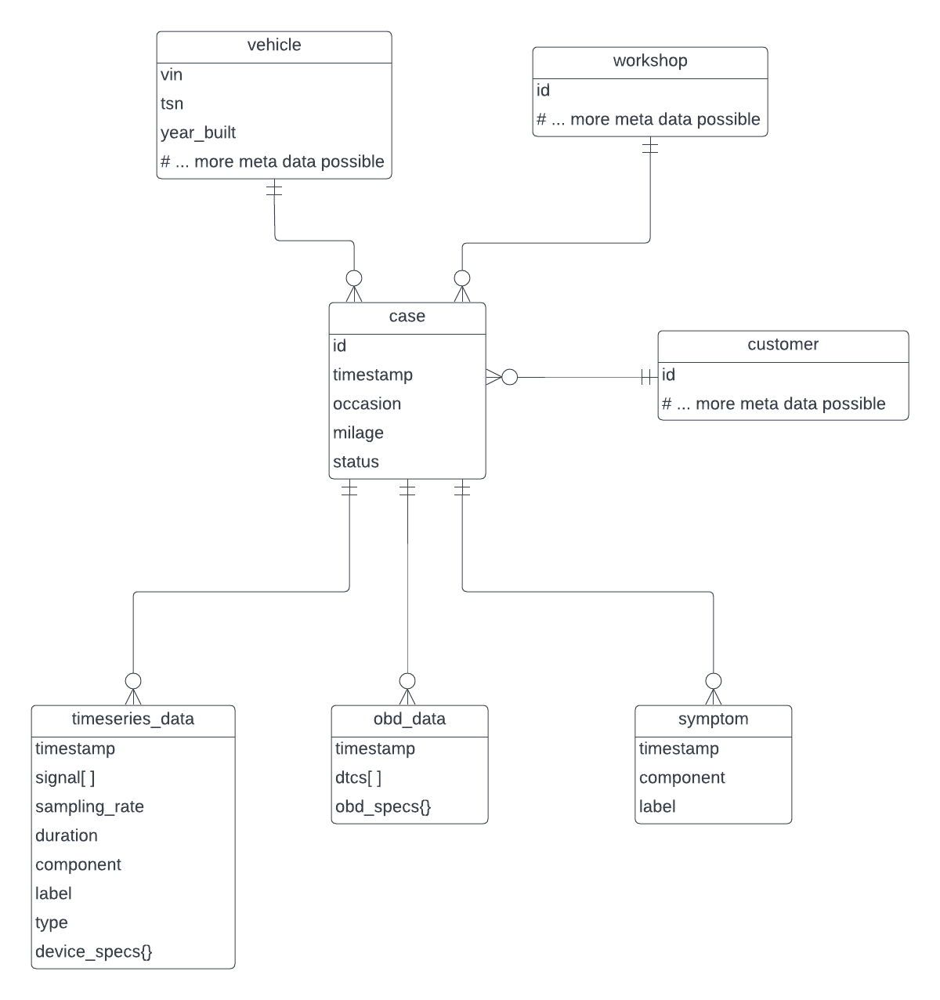

Datenbank
Die Datenbank speichert die zur KI geführten Fehlerdiagnose relevanten Daten einer Betreiberfirma in einem standardisierten Schema.
Konzeptionelles Datenschema
Ein Fall (case) repräsentiert genau einen Aufenthalt genau eines Fahrzeugs
(vehicle) in genauer einer Werkstatt (workshop).
Der Fall ist dabei mit genau einem Kunden (customer) assoziiert, also
beispielsweise der Person oder Firma, die das Fahrzeug in die Werkstatt bringt.
Während des Werkstattaufenthalts des Fahrzeugs werden diagnostische Daten zu dem Fall hinzugefügt. Es werden drei verschiedene Typen von diagnostischen Daten in Betracht gezogen:
- Zeitreihen Daten (
timeseries_data) - OBD Daten (
obd_data) - Symptome (
symptom)
Die untenstehenden Abbildung zeigt ein auf diesen Überlegungen basierendes ER Diagramm:

Der nächste Abschnitt enthält eine detailiertere Beschreibung der verschiedenen Entitäten.
Details zu den Entitäten
case
Ein Fall repräsentiert genau einen Aufenthalt genau eines Fahrzeugs in genauer einer Werkstatt und ist das zentrale organisierende Objekt im Datenmodell. Ein Fall beinhaltet die folgenden atomaren Attribute:
| Attribut | Beschreibung | Beispiele |
|---|---|---|
id |
Eindeutiger Identifikator | |
timestamp |
Zeitpunkt der Erstellung | |
occasion |
Anlass für den Werkstattaufenthalt | "Service / Routine", "Problem / Defekt" |
milage |
Aktueller Kilometerstand | |
status |
Status des Falls | "open", "closed" |
vehicle
Repräsentiert das Fahrzeug als technisches Objekt. Jede Instanz, identifiziert
durch seine vin, existiert höchstens einmal in der Datenbank. Aktuell werden
außerdem die Attribute tsn und Baujahr (year_built) verwendet. Theoretisch
sind auch weitere technische Attribute denkbar, solange diese sich nicht mit
der Zeit ändern, also beispielsweise Hersteller, Fahrzeugtyp etc.
Attribute die den Zustand des Fahrzeugs zu einem bestimmten Zeitpunkt
beschreiben werden nicht der Fahrzeug Entität, sondern dem Fall zugeordnet
(Beispiel: Kilometerstand).
workshop
Repräsentiert eine spezifische Werkstatt. Diese Informationen wird eigentlich nicht für diagnostische oder KI Anwendungen benötigt. Da ein Hub aber zu einer Betreiberfirma gehört die wiederum mehrere Werkstätten betreiben könnte, ist es innerhalb eines Hubs nötig nachzuhalten, welche Fälle zu welcher Werkstatt gehören. Theoretisch könnten dieser Entität noch weitere Meta Daten zur Werkstatt zugeordnet werden wie z.B. Kontakt Informationen. Der Hub Prototyp beinhaltet diese Informationen noch nicht.
customer
Repräsentiert diejenige Person / Firma, die das Fahrzeug in die Werkstatt bringt, üblicherweise also den/die Besitzer/in des Fahrzeugs zum Zeitpunkt des Falls. Auch diese Information wird eigentlich nicht zu Diagnosezwecken oder für KI Anwendungen benötigt. Die Kundenentität ist im aktuellen Prototypen dennoch enthalten, da so z.B. das Durchsuchen von Fällen nach Kunde möglich ist. Es liegt nahe, dass dies in einem realistischen Anwendungsszenario eine nützliche Funktionalität ist.
Mit Blick auf die Gaia-X Storyline im Projekt kann die Berücksichtigung von (möglicherweise künstlichen) Kundendaten auzßerdem nützlich sein um verschiedene Konzepte zu illustrieren:
- Für die Betreiberfirma ist das Handling von Kundendaten ein normaler Bestandteil des eigenen Geschäftsprozesses. Diese Informationen sind zu entfernen, bevor Daten mit Partnern im AW4.0 Datenraum geteilt werden
- Transparenz: Der Datensatz ermöglich die Beantwortung von Kundenanfragen wie "Welche Daten liegen über mich vor?"
timeseries_data
Eine Instanz repräsentiert eine einzelne Zeitreihen Messung, also z.B. ein Oszilloskop Signal. Attribute sind in der folgenden Tabelle genauer beschrieben.
| Attribut | Beschreibung | Beispiele |
|---|---|---|
timestamp |
Zeitpunkt der Erstellung | |
signal[] |
Das eigentliche Signal, e.g Array mit Floats | |
sampling_rate |
Abtastrate der Messung in Hz | |
duration |
Dauer der Messung in Sekunden | |
component |
Das gemessene Fahrzeugbauteil | "Batterie" |
label |
Label des Datensatzes | "Regelfall / Unauffällig", "Anomalie / Auffälligkeit" |
type |
Typ des Datensatzes | "oscillogram", "engine load" |
device_specs{} |
Technische Spezifikationen des Messgeräts. "{}" bedeutet hier, das dies ein nicht-standardisiertes Objekt mit verschiedenen key-value Paaren sein kann, abhängig vom benutzten Messgerät |
obd_data
Eine Instanz repräsentiert das einmalige Auslesen des Fahrzeug Fehlerspeichers. Attribute sind in der folgenden Tabelle genauer beschrieben.
| Attribut | Beschreibung | Beispiele |
|---|---|---|
timestamp |
Zeitpunkt der Erstellung | |
dtcs[] |
Array mit DTCs | ["P0101", "P0202", "P0303"] |
obd_specs{} |
Technische Spezifikationen des Messgeräts. "{}" bedeutet hier, das dies ein nicht-standardisiertes Objekt mit verschiedenen key-value Paaren sein kann, abhängig vom benutzten Messgerät |
symptom
Eine Instanz repräsentiert das Ergebnis einer (manuellen / ausführlichen / nicht durch die anderen Datentypen abgedeckten) Überprüfung eines spezifischen Bauteils. Attribute sind in der folgenden Tabelle genauer beschrieben.
| Attribute | Description | Examples |
|---|---|---|
timestamp |
Zeitpunkt der Erstellung | |
component |
Das untersuchte Fahrzeugbauteil | "Lichtmaschine" |
label |
Das Ergebnis der Untersuchung | "defekt", "nicht defekt" |
Anmerkungen zum Datenmodell
Anmerkung 1: customer - vehicle Relation
Die real-world Relation "besitzt" zwischen Kunde und Fahrzeug wird im hier
vorgestellten Datenmodell nicht durch eine direkte Verbindung zwischen customer
und vehicle berücksichtigt. Die Begründung ist wie folgt:
Die Relation ist eine many-to-many Beziehung. Ein/Eine Kunde/Kundin besitzt im
Laufe der Zeit mehrere Fahrzeuge und ein Fahrzeug hat über seine Nutzungsdauer
mehrere Besitzer. Sowohl für Kunden, als auch für Fahrzeuge sollte jede
real-world Instanz höchstens einmal in der Hub Datenbank sein, um
Inkonsistenzen zu vermeiden, z.B. wenn Meta Daten aktualisiert werden.
Desweiteren ist ein spezifisches (customer, vehicle) Paar nur über eine
bestimmte Zeit Teil der "besitzt" Relation. Die many-to-many Relation müsste
also ohnehin durch eine dedizierte Tabelle repräsentiert werden und nicht
mittels Fremdschlüsseln die direkt von vehicle zu customer (oder andersherum)
verweisen.
Die Aufgabe dieser dedizierten Tabelle wird bereits durch die Liste der Fälle
abgedeckt.
Technische Umsetzung
Die Umsetzung des oben beschriebenen Datenmodells ist mit verschiedenen relationalen und nicht-relationalen Datenbanksystemen denkbar. Für den Hub Prototypen ist die Entscheidung zunächst auf MongoDB gefallen, da ... - ... das flexible Dokumenten-basierte Datenmodell eine einfachere Anpassung im Laufe des Projekts ermöglicht - ... mit GridFS die Möglichkeit besteht auch größere Oszilloskop Signale im Binärformat zu speichern